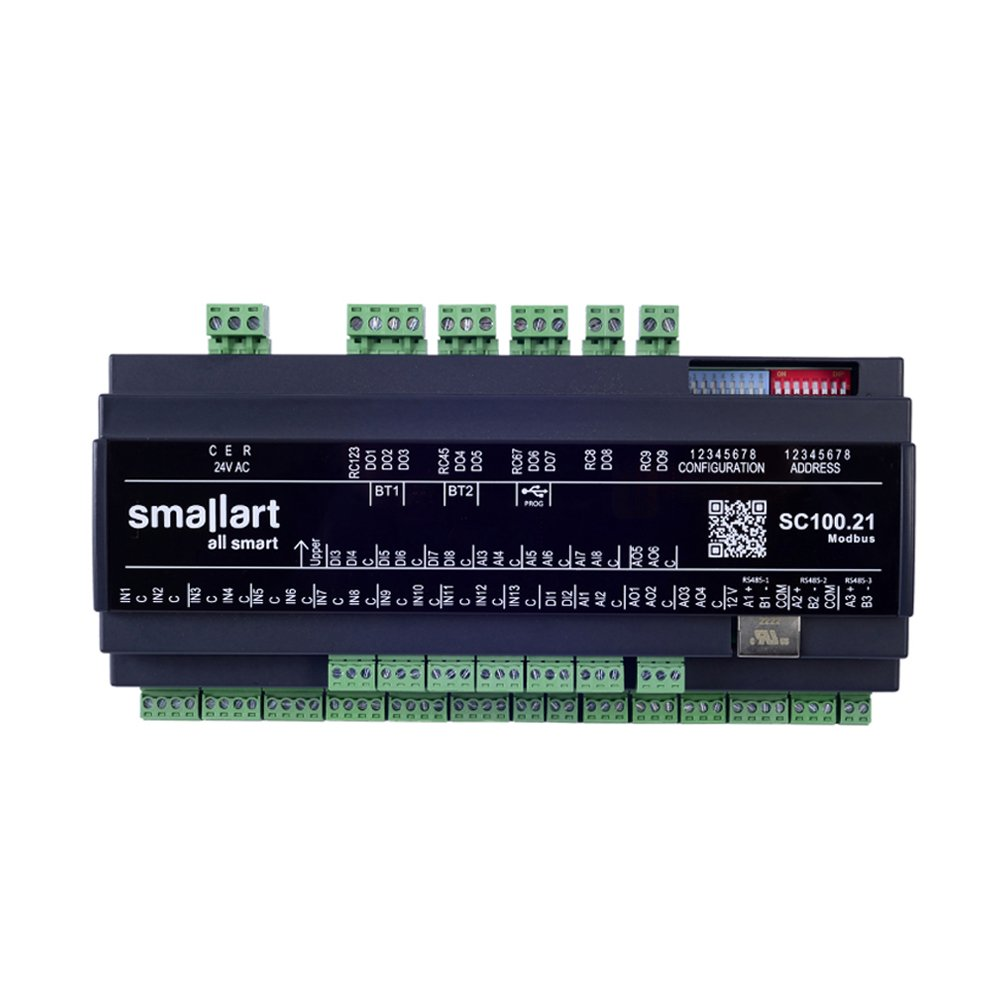
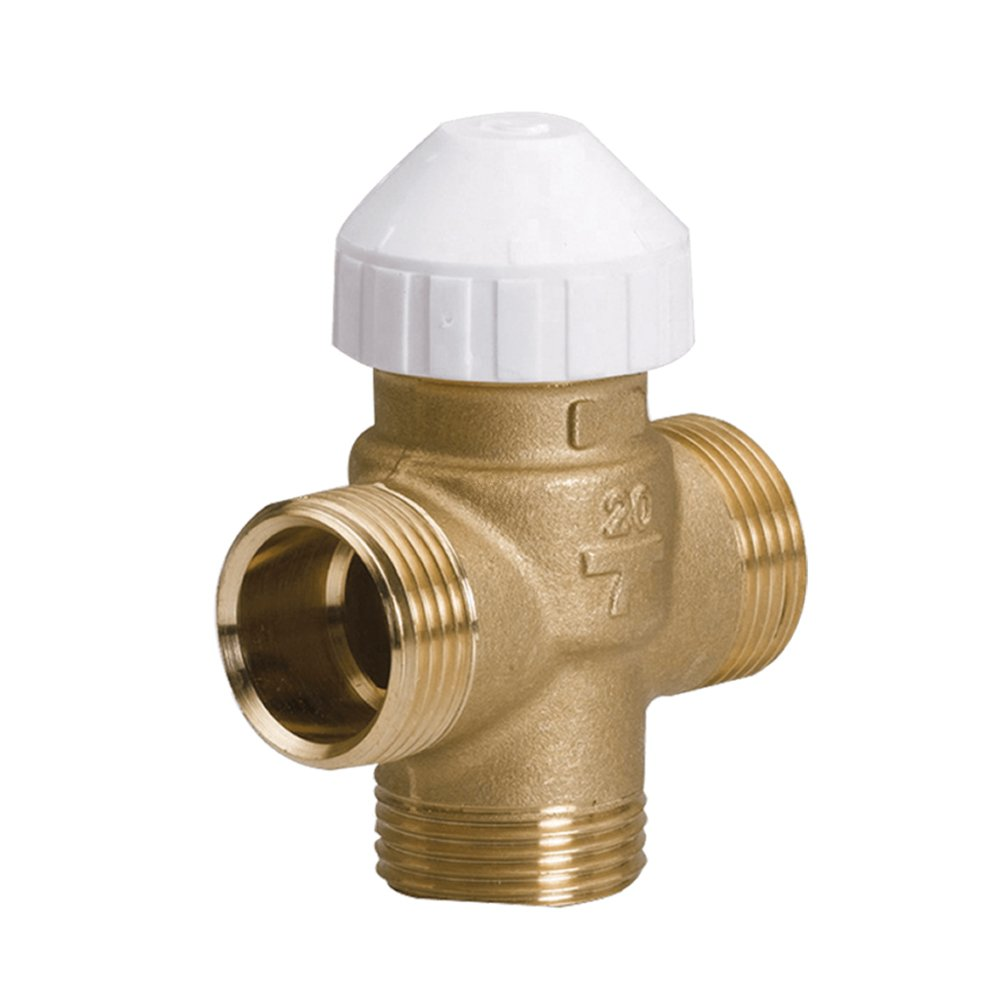

☎ 0216 344 48 19
GES markasına ait 35 ürün Klimasun kataloğunda. Fancoil Termostatları, Fancoil Termostatları, Oda Termostatları, Kontrolörler & Kartlar alanlarında orijinal ürün ve yedek parça tedariki, stoktan hızlı sevkiyat.




Evet. Klimasun GES ürünlerini ve yedek parçalarını orijinal olarak tedarik eder; kataloğumuzda 35 GES ürünü listelidir.
Evet, tüm ürünler orijinaldir. Stokta olmayanlar Almanya ve İtalya'dan sipariş üzerine temin edilir.
Ürünü teklif sepetine ekleyip WhatsApp (0532 424 6219) veya e-posta ile iletin; hızlıca kurumsal teklif alırsınız.